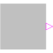

RadioButtonSourceBoolean signal source that mimics a radio button |

|
Information
This information is part of the Modelica Standard Library maintained by the Modelica Association.
Boolean signal source that mimics a radio button: Via a table, a radio button is pressed (i.e., the output 'on' is set to true) and is reset when an element of the Boolean vector 'reset' becomes true. If both appear at the same time instant, setting the button according to the table has a higher priority as resetting the button. Example:
RadioButtonSource start(buttonTimeTable={1,3}, reset={stop.on});
RadioButtonSource stop (buttonTimeTable={2,4}, reset={start.on});
The "start" button is pressed at time=1 s and time=3 s, whereas the "stop" button is pressed at time=2 s and time=4 s. This gives the following result:

This example is also available in Modelica.Blocks.Examples.Interaction1
Parameters (1)
| buttonTimeTable |
Value: {0, 1} Type: Time[:] (s) Description: Time instants where button is pressed |
|---|
Inputs (1)
| reset |
Default Value: {false} Type: Boolean[:] Description: Reset button to false, if an element of reset becomes true |
|---|
Connectors (1)
| on |
Type: BooleanOutput |
|---|
Components (1)
| table |
Type: BooleanTable |
|---|
Used in Examples (3)
|
Modelica.Blocks.Examples Demonstrates the usage of blocks from Modelica.Blocks.Interaction.Show |
|
|
Modelica.StateGraph.Examples Demonstrating the controller of a tank filling/emptying system |
|
|
Modelica.Fluid.Examples.ControlledTankSystem Demonstrating the controller of a tank filling/emptying system |